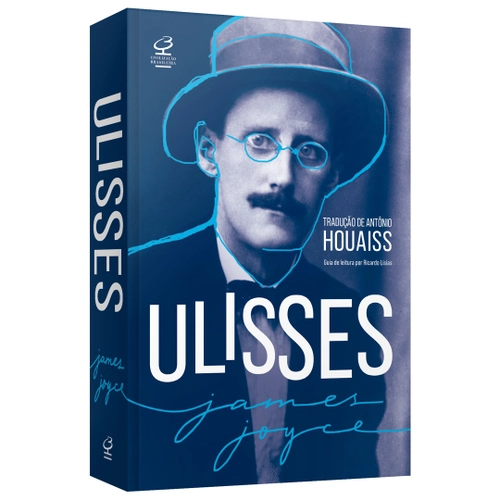
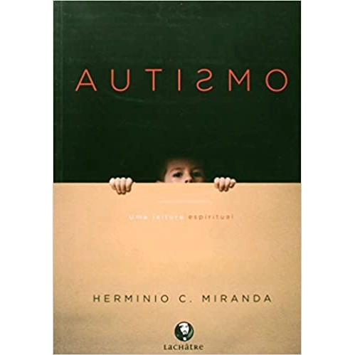

O clube do livro é um espaço de troca, de diálogo, de descoberta. É um lugar onde os livros são os protagonistas, mas também os leitores. Seja bem-vindo e participe com a sua opinião, a sua curiosidade, a sua paixão
Invista na sua leitura, os melhores livros por menores preços
-

É Assim Que Acaba
Sinopse:Considerado O Livro Do Ano, Que Virou Febre No TikTok E Sozinho Já Acumulou Mais De Um Milhão De Exemplares Vendidos No Brasil. É Assim Que Acaba É O Romance Mais Pessoal Da Carreira De Colleen Hoover, Discutindo Temas Como Violênci...
-

A Hipótese Do Amor
Sinopse:Quando Um Namoro De Mentira Entre Cientistas Encontra A Irresistível Força Da Atração, Todas as Teorias Cuidadosamente Calculadas Sobre O Amor São Postas à Prova. Com Personagens Cativantes e Diálogos Afiados, este Livro Engraç...
-

O Lado Feio Do Amor
Sinopse:Quando Começou A Se Envolver Com Miles, Tate Prometeu Não Se Apaixonar. Mas Vai Descobrir Que Nenhuma Regra É Capaz De Controlar O Amor E O Desejo...Da Autora-Fenômeno Colleen Hoover, Que Acumula Best-Sellers, Visualizações No ...
-

Uma Segunda Chance
Sinopse:Será que todos merecem uma segunda chance? É o que mais deseja Kenna Rowan, na luta para recuperar os pedaços estilhaçados de sua antiga vida após um trágico acidente ter colocado tudo a perder. Uma segunda chance é o tão esperado n...
-

Aconteceu Naquele Verão
Sinopse:Autora best-seller Tessa Bailey traz deliciosa comédia romântica sobre dois opostos que fazem de tudo para não se atrairPiper Bellinger, uma das it girls mais influentes de Los Angeles, vive chamando atenção nos eventos e nas redes ...
-

A Paciente Silenciosa
Sinopse:Após cometer o assassinado de seu marido, uma mulher se recusa a falar qualquer coisa, deixando suspeitas e mistérios não resolvidos sobre o caso. E o terapeuta Theo Faber está obcecado em descobrir o m...
-

Nunca Saia Sozinho
Sinopse:SE ACEITAR O CONVITE, NÃO IGNORE O AVISO. Dentro Dos Muros De Uma Escola De Elite As Expectativas São Altas, E as Regras, Rígidas. Na Floresta, Além Do Campus Bem Cuidado, Há Uma Pensão Abandonada Que É Utilizada Pelos Alunos Como P...
-

Morte No Internato
Sinopse:Obra Inédita Da Aclamada Lucinda Riley, Morte No Internato. É Um Romance Policial Com Uma Trama Instigante E A Escrita Envolvente Que Se Tornaram Marca Registrada Da Autora. Lucinda É Autora Da Série As Sete Irmãs, Um Fenômeno Global...
-

As Outras Pessoas
Sinopse:Novo Livro Da Autora Que Já Vendeu 220.000 Exemplares No BrasilGabe Forman Está Preso Em Um Engarrafamento, Atrasado Para O Jantar Em Casa Com A Família, Quando O Rosto De Sua Filha, Izzy, De Cinco Anos, Aparece No Vidro Traseiro Do...
-

Segredos De Família
Sinopse:De Fora, Os Delaney Parecem Uma Família Perfeita. Os Pais, Stan E Joy, Ex-Técnicos De Tênis, Seguem Ganhando Torneios Mesmo Depois De Tantos Anos De Estrada, E A Química Dos Dois Fora De Quadra É Inegável.
Guerra
-

A Guerra Da Papoula
Sinopse:Considerada Uma Das Melhores Fantasias De Todos Os Tempos, A Guerra Da Papoula Narra A Jornada Mágica E Sangrenta De Uma Jovem Em Uma Nação Prestes A RuirA Guerra Está No Coração Do Império Nikara, E O Ópio Corre Em Suas Veias. No P...
-

Guerra Que Salvou A Minha Vida
Sinopse:Ada tem dez anos (ao menos é o que ela acha). A menina nunca saiu de casa, para não envergonhar a mãe na frente dos outros. Da janela, vê o irmão brincar, correr, pular - coisas que qualquer criança sabe fazer. Qualquer criança que não tenha nascido com um "pé torto" como o seu.
-

Guerra Particular De Lênin
Sinopse:Em A GUERRA PARTICULAR DE LENIN, Lesley Chamberlain Conta a história De Intelectuais, a maioria filósofos, cientistas e jornalistas, deportados por Lenin, no momento em que a Rússia se preparava para a criação da União Soviética.
-

Primera Guerra Mundial
Sinopse:Impresionantes historias que entrelazan los principales frentes de la Primera Guerra Mundial en un relato arrollador. - Resea La Gran Guerra dejó millones de civiles y soldados mutilados o muertos. Siga los pasos de los militares br...
-

O Diário De Anne Frank
Sinopse:Edição de bolso do emocionante relato que se tornou um dos livros mais lidos do mundo. O depoimento da pequena Anne Frank, morta pelos Nazistas após passar anos escondida no sótão de uma casa em Amsterdã, ainda hoje emociona leitore...
-

Cem Anos De Solidão
Sinopse:Neste clássico de Gabriel García Marques, conheça as fabulosas aventuras dos Buendía-Iguarán, com seus milagres, fantasias e dramas que representam famílias do mundo inteiro. Romance fundamental na história da literatura,...
-

Um Defeito De Cor
Sinopse:"Fascinante História De Uma Africana Idosa, cega e à beira da morte, que viaja da África para o Brasil em busca do filho perdido há décadas. Ao longo da Travessia, ela vai contando sua vida, marcada por mortes, estupros, Viol...
-

O Sol É Para Todos
Sinopse:Um dos maiores clássicos da literatura mundial. O sol é para todos ganhou o Prêmio Pulitzer em 1961 e deu origem a um filme homônimo, vencedor do Oscar de melhor roteiro adaptado, em 1962. Lançado pela primeira vez em 1960, até hoje...
-

O Jardim Secreto: Edição Bolso De Luxo
Sinopse:Uma história encantadora de transformação e empatia. Um clássico da literatura Inglesa infantojuvenil adorado há mais de um século por leitores de todas as idades. Ao perder os pais numa epidemia de cólera na Índia, onde Nasceu...
-
Sinopse:
-

Ulisses
Sinopse:"O mais importante livro de James Joyce, agora com nova arte de capa. Esta edição de Ulisses conta também com a célebre e pioneira tradução de Antonio Houaiss, além de um inédito Guia de leitura preparado por Ricardo Lísias...
-

Historia Das Mulheres No Brasil
Sinopse:Conta A Trajetória Das Mulheres, do Brasil colonial a nossos dias, voltando-se a todos os tipos de leitores e leitoras: adultos e jovens, especialistas e curiosos, estudantes e professores, arrastando-os numa viagem através dos Temp...
-

Contra Os Filhos
Sinopse:Cáustico e crítico, este ensaio debate os atuais modelos de maternidade e família, mostrando como premissas aparentemente progressistas acabam pregando o Retorno das mulheres ao lar. Agora que as mulheres lutaram tanto por sua liber...
-

Mulheres Normais
Sinopse:Nós, Mulheres Normais, Estamos Todas Trabalhando Por Um Lugar No Sol Em Pleno Século XXI. É Verdade. Temos Nossas Diferenças: Nossos Corpos, Gostos, Opções Sexuais, Preferências, Profissões, Talentos, Vocações, Desejos, Cabelos, Che...
-

Restos & Rastros
Sinopse:Livia Garcia-Roza nos presenteia com este delicado livro Restos & rastros é uma primorosa antologia de pensamentos e lembranças de Livia Garcia-Roza, autora capaz de iluminar até as mínimas esquinas da vida. A autora afirma que o li...
-

Extraordinárias: Mulheres Que Revolucionaram O Brasil
Sinopse:Dandara foi uma guerreira fundamental para o Quilombo dos Palmares. Niède Guidon descobriu os registros rupestres mais importantes do nosso território. Maria da Penha ficou paraplégica e por pouco não perdeu a vida, mas sua luta res...
-

O Milagre Da Manhã Autor Hal Elrod (2019)
Sinopse:O segredo para transformar a sua vida antes das 8 horas. O milagre da manhã permite que o leitor alcance níveis de sucesso jamais imaginados, tanto na vida pessoal quanto profissional.
-

Talvez Você Deva Conversar Com Alguém Uma Terapeuta, O Terapeuta Dela E A Vida De Todos Nós
Sinopse:Br / De modo geral, buscamos a ajuda de um terapeuta para melhor compreender as angústias, os medos, a culpa ou quaisquer outros sentimentos que nos causam desconforto e sofrimento. Mas quantos de nós já paramos para perguntar: o te...
-

A Coragem De Ser Imperfeito
Sinopse:O Desfecho Da Inspiradora Saga Do Dr. Marco Polo. Jovens Ansiosos, Agressivos E Intratáveis Poderiam Se Tornar Mentes Brilhantes? O Intrigante Psiquiatra Marco Polo, Usando As Complexas Ferramentas De Gestão Da Emoção Do Mestre Dos ...
-

O Poder Do Agora
Sinopse:Um dos maiores fenômenos da literatura mundial. Mais de um milhão de livros vendidos no Brasil. "Este é um dos melhores livros que surgiram nos últimos tempos. Cada frase transmite verdade e poder. " – Deepak Chopra, autor de As set...
-

Queime Depois De Escrever
Sinopse:Primeiro lugar na lista da nielsen americana. mais de 200.000 exemplares vendidos. Você consegue ser sincero quando ninguém está olhando? Com perguntas instigantes, questionários e jogos de associação de palavras, você vai pintar um...
-

Homens São De Marte Mulheres São De Vênus
Sinopse:O livro de relacionamentos mais famoso e confiável de todos os tempos ganha nova edição. Era uma vez um marciano e uma venusiana que e encontraram, se apaixonaram e viveram bem, porque respeitavam suas peculiaridades. Um belo dia, ...
-

A Morte É Um Dia Que Vale A Pena Viver
Sinopse:Edição revista E ampliada. um livro que propõe um novo olhar para A vida. Em A morte é um dia que vale a pena viver, Ana Claudia tem a coragem de lidar com um tema que é ainda um tabu. Em toda a sua vida profissional, a médica enfre...
-

A Arte Da Sedução
Sinopse:Quando nos apaixonamos, caímos numa espécie de encantamento. Nossa mente, em geral preocupada com seus próprios problemas, só pensa no ser amado. O ser hipnotizado se rende à vontade daquele que o seduziu. Sedutores são aquelas pess...
-
Livro Bom Dia, Espirito Santo Benny Hinn
Sinopse:DescriçãoBom dia Espírito Santo Benny HinnEm Bom dia, Espírito Santo, Benny Hinn, um dos maiores evangelizadores do mundo, relata sua trajetória incomum rumo à transformação de sua vida por meio dos ensinamentos de Deus. A partir de...
-

Agir Invisivel De Deus
Sinopse:Vivemos dias em que a fé cristã tem crescido e se espalhado grandemente. Mas temos que reconhecer que esse avanço tem acontecido a uma velocidade muito maior do que a capacidade de a Igreja amadurecer. Com isso, a maneira de Deus ...
-

Uma Vida Com Propósitos
Sinopse:“Uma vida com propósitos é sem dúvida um clássico. Um livro inspirador, ao mesmo tempo pragmático e profundo, que nos leva a uma reflexão sobre o real sentido da vida e nosso posicionamento diante dela.” Adérson O. M. C. Damião,...
-
O Inocente, - Alguns Erros Podem Mudar Sua Vida Para Sempre
Sinopse:Aos 20 anos, Matt Hunter vive uma noite de horror que ficará para sempre gravada em sua memória. Durante uma festa, ao tentar apartar uma briga, ele mata uma pessoa acidentalmente e é considerado culpado pelo júri. Agora, nove anos ...
-

Autismo: Uma Leitura Espiritual
Sinopse:O mundo fechado do autismo continua sendo um enigma para a ciência. Variadas e conflitantes abordagens, predominantemente genéticas, não chegam a resultados conclusivos. Este trabalho se distingue por basear-se numa premissa inteira...
-
Biomilda Diário De Viagem
Sinopse:Produto Novo Biomilda conhecia o mundo quase todo. Um país, no entanto, tinha um lugar especial em seu coração, pois fora lá que nascera: o Brasil! De repente, surgiram lembranças das brincadeiras divertidas, comidas deliciosas e pa...